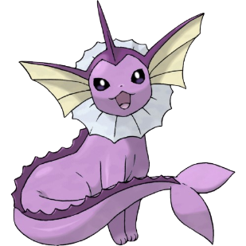
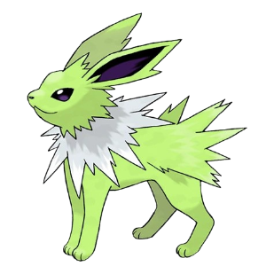
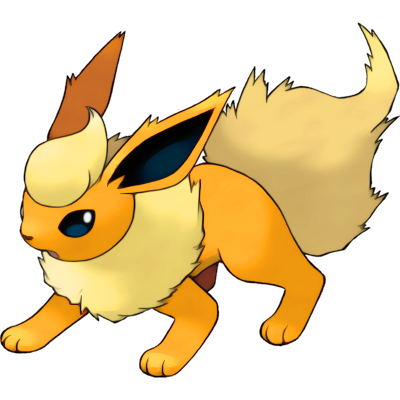
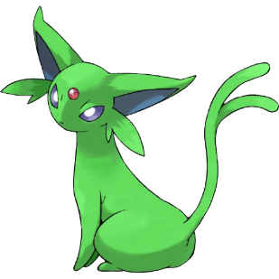
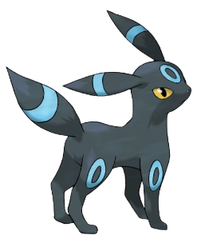
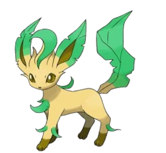
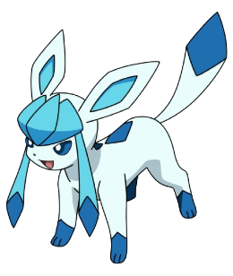
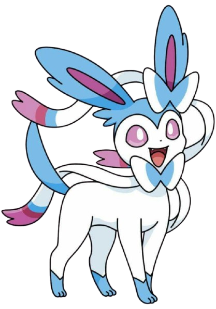

Pokémons Shiny
Um Pokémon Shiny é uma versão especial com coloração diferente da normal. A chance de encontrar um Shiny é de apenas 1 em 4096 — tornando-os extremamente raros e cobiçados!
Eevee Shiny
A Shiny mais popular da franquia.

A Eevee Shiny possui pelo Prateado em vez do marrom normal. É uma das Shinys mais populares da franquia!
As Eeveelutions Shiny
Cor normal e cor Shiny de cada evolução.
-

Vaporeon
Original: azul claro
Roxo claro
-

Jolteon
Original: amarelo
Verde limão
-

Flareon
Original: laranja
Amarelo dourado
-

Espeon
Original: lilás
Verde
-

Umbreon
Original: preto com anéis amarelos
Anéis azuis
-

Leafeon
Original: verde
Verde escuro
-

Glaceon
Original: azul
Azul claro
-

Sylveon
Original: rosa e branco
Azul e branco
Curiosidades sobre Shinys
Três fatos que todo caçador de Shiny conhece.
- Com o amuleto Shiny Charm a chance sobe para 1 em 1365
- Shinys não são mais fortes — só têm cor diferente
- A Umbreon Shiny é considerada uma das mais bonitas da franquia